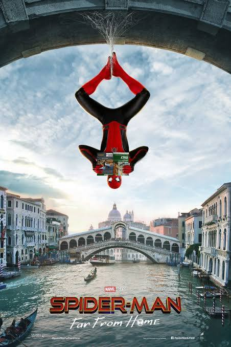

Introduction
The Spider-Man trilogy in the Marvel Cinematic Universe stars Tom Holland as Peter Parker. This trilogy explores his evolution from an ambitious high schooler into a seasoned superhero. The movies incorporate thrilling action sequences, emotional storytelling, and interconnected Marvel characters.
Trilogy Overview
Spider-Man: Homecoming (2017) follows Peter as he navigates high school life while battling Vulture. Spider-Man: Far From Home (2019) takes Peter on a European trip where he faces Mysterio's deception. Spider-Man: No Way Home (2021) brings back villains from past franchises, ultimately changing Peter’s life forever.
Spider-Man: Homecoming
In Spider-Man: Homecoming, Peter Parker is mentored by Tony Stark as he tries to balance his life as an ordinary high school student in Queens with his superhero alter-ego Spider-Man. The film introduces the Vulture as the main antagonist, who poses a significant threat to Peter and his loved ones.

Spider-Man: Far From Home
Spider-Man: Far From Home takes place after the events of Avengers: Endgame. Peter Parker goes on a school trip to Europe, where he is recruited by Nick Fury to team up with Mysterio to battle the Elementals. However, things take a turn when Mysterio's true intentions are revealed.
Spider-Man: No Way Home
Spider-Man: No Way Home sees Peter Parker dealing with the aftermath of his identity being exposed to the world. Seeking help from Doctor Strange, Peter inadvertently opens the multiverse, bringing villains from other dimensions into his world. The film features appearances from previous Spider-Man actors and their respective villains, culminating in an epic showdown.
Character Development
Throughout the trilogy, Peter Parker's character undergoes significant development. He evolves from a naive and eager young hero into a mature and responsible superhero. His relationships with other characters, such as Tony Stark, Aunt May, and his friends, play a crucial role in his growth.
Impact on the MCU
The Spider-Man trilogy has had a profound impact on the Marvel Cinematic Universe. It has expanded the universe's storytelling possibilities by introducing the multiverse concept and bringing together characters from different Spider-Man franchises. The trilogy has also set the stage for future Spider-Man stories and collaborations within the MCU.
- Tom Holland's portrayal of Spider-Man
- Integration of Spider-Man into the larger MCU
- Villains and their unique challenges
- Emotional themes and storytelling
For more information, visit Marvel's official site or Spider-Man: No Way Home on IMDb.